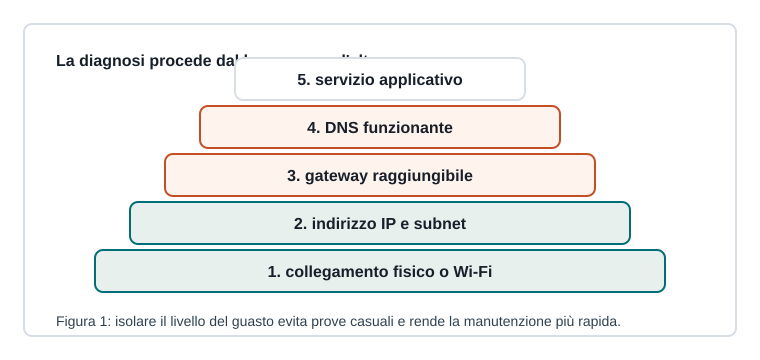

Capitoletto 3.4
Diagnostica e manutenzione
Diagnosticare una rete significa formulare ipotesi, fare prove mirate e raccogliere indizi senza procedere a tentativi casuali.

Metodo per livelli
Si parte dal collegamento fisico o wireless, poi si controlla la configurazione IP, il gateway, il DNS e infine il servizio applicativo. Ogni prova deve confermare o escludere una causa.
- La scheda è collegata e attiva?
- L'host ha IP e prefisso corretti?
- Il gateway risponde?
- Il DNS risolve i nomi?
- Il servizio remoto accetta connessioni?
Comandi utili
| Comando | Uso |
|---|---|
ipconfig / ip addr | mostra indirizzi e interfacce |
ping | verifica raggiungibilità e latenza |
tracert / traceroute | mostra i salti verso una destinazione |
nslookup | verifica la risoluzione DNS |
Log e monitoraggio
I log raccontano eventi, errori e accessi; il monitoraggio osserva parametri come banda, CPU, memoria, spazio disco e disponibilità dei servizi. Senza dati storici è difficile distinguere un problema occasionale da un degrado progressivo.
Manutenzione preventiva
Aggiornamenti, backup, etichettatura dei cavi, inventario apparati e documentazione delle configurazioni riducono i tempi di intervento. La manutenzione efficace è invisibile quando tutto funziona, ma decisiva quando qualcosa si rompe.
Ripasso
Perché è utile procedere per livelli?
Per isolare il problema e non confondere guasti fisici, configurazioni IP, DNS e servizi applicativi.
Che cosa indica un ping al gateway riuscito?
Che il collegamento locale e la configurazione IP di base sono probabilmente corretti.